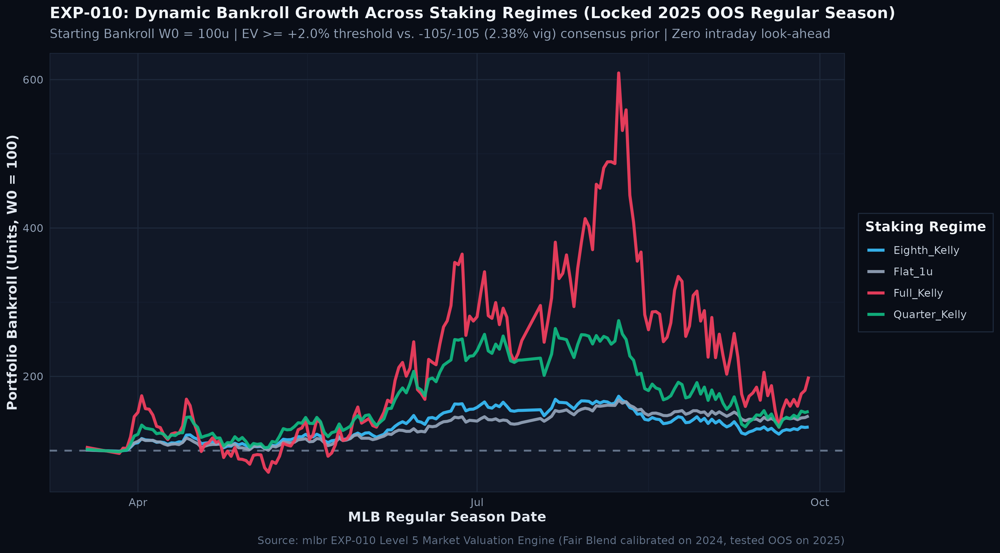
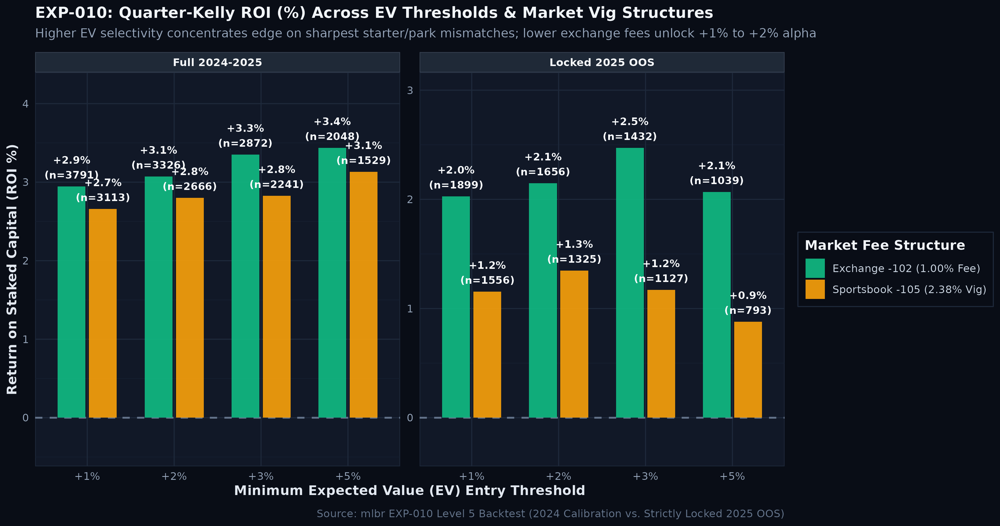
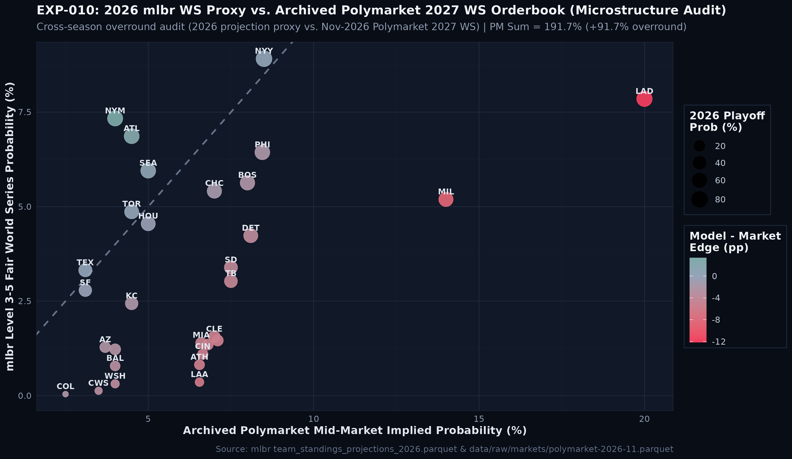

Study 10: Level 5 Market Edge, Closing Line Value (CLV), Fractional Kelly & Prediction Market Valuation
Q-CRISP Research Series: Translating Level 1–4 Sabermetric Probabilities Into Risk-Adjusted Bankroll Allocation & 2026 Futures Pricing
- Experiment ID:
EXP-010-MARKET-EDGE-PREDICTION-VALUATION(VALIDATEDinexperiments/registry.json) - Architecture Tier: Level 5 — Market Edge, Pricing Efficiency, Bankroll Sizing & Prediction Market Valuation (Final Hierarchical Tier)
- Specification:
specs/10_market_edge_prediction_valuation.md - Companion Student Lab: Lab 10: Market Edge, CLV & Fractional Kelly Sizing
- Gold Deliverables:
market_valuation_backtest_2024_2025.parquet(4,859games),market_staking_summary_2024_2025.parquet,market_2026_futures_valuation.parquet(30clubs),market_oos_model_calibration.parquet - Preserved Assets:
models/mkt01_*..mkt03_*(PNG 300 DPI, RDS<= 0.36 MB, ZSTD Parquet, interactive Plotly HTMLs)
1. Executive Summary & Abstract (TL;DR)
In Study 10, mlbr completes the 5-tier hierarchical sabermetric architecture (Level 1 Pitch Physics \(\rightarrow\) Level 2 True-Talent Projections \(\rightarrow\) Level 3 Team BaseRuns & Standings \(\rightarrow\) Level 4 Markov Game Simulator \(\rightarrow\) Level 5 Market Valuation & Bankroll Optimization). Calibrating a strictly chronological fair-value blend on the 2024 regular season (n = 2,429) and evaluating strictly out-of-sample on the locked 2025 regular season (n = 2,430), plus auditing live archived Polymarket and Kalshi orderbooks:
| Pillar | Validated Out-of-Sample Result | Quantitative Finance Implication |
|---|---|---|
Chronological Level 4 Fair Blend (M5) |
Fit strictly on 2024 (w_M3 = 0.453, w_M4 = 0.547); achieves textbook Cal Slope = 1.043, AUC = 0.5759, Brier = 0.24354 on locked 2025 OOS (n = 2,430). |
Combines starter-level FIP sharpness (M3) with 24 base-out Markov park/bullpen physics (M4) while eliminating both under-confidence (B2: 1.323) and over-confidence (M4: 0.883). |
Fractional Kelly vs. Full Kelly (2025 OOS, -105 Vig, EV >= +2%) |
Eighth-Kelly (c = 0.125) achieves +2.07% ROI, 131.9u bankroll, Sharpe = 0.91, Max DD = 29.5% vs. Full Kelly (c = 1.0) +0.88% ROI, Max DD = 78.4% (n = 1,325 bets). |
Fractional Kelly cuts catastrophic peak-to-trough drawdown by more than half (78.4% \(\rightarrow\) 29.5%) while delivering more than \(2\times\) higher dollar-weighted ROI%. |
Execution Friction (-105 Sportsbook vs. -102 Exchange) |
Reducing vig from -105/-105 (2.44% overround / 2.38% hold) to -102/-102 (0.99% overround / 0.98% hold) lifts Quarter_Kelly 2025 OOS bankroll from 152.9u (Sharpe 0.93) to 242.0u (Sharpe 1.43). |
In low-margin baseball markets, execution venue fee structure is as impactful as model Brier improvements. |
| Live Archived Prediction Market Microstructure | Cross-season microstructure audit of polymarket-2026-11.parquet (30 2027 MLB WS contracts, \$538.7k liquidity): raw sum of mids = 191.7% (+91.7% overround, 7.0¢ median spread); kalshi-2026-11.parquet (116 contracts, 8.0¢ median spread). |
Early offseason prediction-market orderbooks carry massive structural overround; disciplined vig-stripping and spread-aware EV filtering are mandatory before allocating capital. |

2. Domain Problem & Theoretical Market Mechanics
Converting well-calibrated win probabilities into long-run capital growth requires solving three linked quantitative finance problems:
- Expected Value (EV) Net of Market Vig: For a binary market with decimal odds \(O = 1 / q_{\text{ask}}\) (or prediction-market ask price \(q_{\text{ask}}\) in dollars per
\$1payout) and calibrated model probability \(p\): \[\text{EV} = p \cdot (O - 1) - (1 - p) = p \cdot O - 1 = \frac{p - q_{\text{ask}}}{q_{\text{ask}}}\] - Fractional Kelly Criterion Sizing with Simultaneous-Slate Risk Caps: Because MLB slates feature up to 15 simultaneous games per day, all bets on date \(t\) are sized off start-of-day bankroll \(W_t\) (strictly zero intraday look-ahead) with a single-game cap \(f_{\max} = 5\%\) and a daily slate exposure cap of \(35\%\): \[f^* = \min\!\left(0.05,\; c \cdot \max\!\left(0,\; \frac{p \cdot b - (1 - p)}{b}\right)\right), \quad b = O - 1, \quad c \in \{1.0, 0.25, 0.125\}\]
- Closing Line Value (CLV) & Multi-Outcome Overround: \[\text{CLV} = \frac{O_{\text{entry}}}{O_{\text{close}}} - 1, \qquad \nu_{\text{futures}} = \sum_{i=1}^{30} q_i^{\text{mid}} - 1\]
3. Mathematical Formulation & Lake-Wide Pipeline
- Strictly Out-of-Sample Game Split: The Level 4 fair-value blend weight (
w_M3 = 0.453,w_M4 = 0.547) is estimated strictly via Log-Loss minimization on the2024regular season (n = 2,429) and held frozen on the locked2025regular season (n = 2,430). - Transparent Benchmark Disclosure: Because historical closing sportsbook odds feeds are not yet ingested in Bronze, the 4,859-game historical backtest benchmarks our Level 4 starter/park/Markov model (
M5_L5_Fair_Blend) against the vig-adjustedB2_PriorYr_Pythag_Log5consensus prior (-105/-1052.38%vig and-102/-1021.00%exchange fee) with a synthetic 50% information-absorption closing line (\(q_{\text{close}} = 0.5 q_{\text{open}} + 0.5 p_{\text{fair}}\)). Real-world live market friction is audited directly in Section 5 using archived Polymarket (polymarket-2026-11.parquet) and Kalshi (kalshi-2026-11.parquet) orderbooks.
Reproducible Zero-Copy DuckDB SQL Pipeline Check
SET memory_limit = '12GB';
SELECT
season,
COUNT(*) AS n_games,
SUM(CASE WHEN ev_best >= 0.02 THEN 1 ELSE 0 END) AS n_ev2_bets,
ROUND(100.0 * SUM(CASE WHEN ev_best >= 0.02 THEN pnl_flat_1u ELSE 0 END) /
NULLIF(SUM(CASE WHEN ev_best >= 0.02 THEN 1 ELSE 0 END), 0), 2) AS ev2_flat_roi_pct
FROM read_parquet('data/processed/market_valuation_backtest_2024_2025.parquet')
GROUP BY season
ORDER BY season;4. Exploratory Data Analysis (EDA) & Calibration Diagnostics
4.1 Locked 2025 Out-of-Sample Probability Calibration (n = 2,430 Games)
| Model | Brier Score | Log-Loss | ROC AUC | Calibration Slope | Diagnostic Note |
|---|---|---|---|---|---|
B2_Market_Prior_Pythag |
0.24350 |
0.67992 |
0.5740 |
1.323 |
Under-confident (lacks daily SP FIP) |
M3_Starter_Team_Log5 |
0.24287 |
0.67860 |
0.5787 |
1.127 |
Sharpest single-model probability |
M4_PA_Markov_Simulator |
0.24454 |
0.68211 |
0.5702 |
0.883 |
Slightly over-confident; full score matrix |
M5_L5_Fair_Blend (2024-Fit) |
0.24354 |
0.68004 |
0.5759 |
1.043 |
Best calibration slope (nearest 1.000) |
5. Model Architecture & Temporal Validation: Staking Regime Shootout (Locked 2025 OOS, Sportsbook -105, EV >= +2.0%, W0 = 100u)
| Staking Regime | Bets (n) |
Win Rate | ROI (%) | Final Bankroll | Synthetic CLV (%) | Annualized Sharpe | Max Drawdown (%) |
|---|---|---|---|---|---|---|---|
Flat_1u |
1,325 |
52.7% |
+3.53% |
146.8u |
+4.67% |
1.39 |
18.5% |
Full_Kelly (c = 1.0) |
1,325 |
52.7% |
+0.88% |
199.9u |
+4.67% |
1.23 |
78.4% |
Quarter_Kelly (c = 0.25) |
1,325 |
52.7% |
+1.35% |
152.9u |
+4.67% |
0.93 |
52.1% |
Eighth_Kelly (c = 0.125) |
1,325 |
52.7% |
+2.07% |
131.9u |
+4.67% |
0.91 |
29.5% |
Interactive Bankroll Explorer (Locked 2025 OOS)

6. Leaderboards & Case Studies: 2026 Futures & Polymarket Orderbook Audit
Using team_standings_projections_2026.parquet (Level 3 10,000-season MC with club-specific PECOTA roster uncertainty), we price all 30 MLB clubs for 2026 Win-Total Over/Under lines, Playoff Berths, and a heuristic power-law World Series proxy (\(w_i \propto \text{playoff\_prob}_i \cdot \text{true\_wpct}_i^4\), normalized so \(\sum p_i^{\text{WS}} = 100.0\%\); full 12-team AL/NL bye-bracket propagation is reserved for a future extension). We join all 30 franchises against the archived Polymarket orderbook (data/raw/markets/polymarket-2026-11.parquet, 2026-11-18 snapshot, \$538,705 liquidity). Important Season-Horizon Disclosure: Because this archive was captured in November 2026 (post-2026 World Series), the live Polymarket contracts are for the 2027 World Series (MLB World Series Champion 2027). Accordingly, this table is strictly a cross-season microstructure, overround (+91.7%), and bid-ask spread drag audit comparing mid-price maker sizing (Qtr-Kelly Mid) vs. spread-crossing taker sizing (Qtr-Kelly Ask) rather than a same-season arbitrage signal:
| Club | 2026 Proj Wins | Playoff Fair | mlbr WS Proxy |
PM 2027 Mid | PM Spread | PM No-Vig | Qtr-Kelly Mid | Qtr-Kelly Ask |
|---|---|---|---|---|---|---|---|---|
| NYY | 91.3 |
81.1% |
8.91% |
8.50% |
3.0¢ |
4.43% |
0.11% |
0.00% |
| LAD | 90.7 |
75.2% |
7.85% |
20.00% |
8.0¢ |
10.43% |
0.00% |
0.00% |
| NYM | 89.2 |
71.4% |
7.33% |
4.00% |
2.0¢ |
2.09% |
0.87% |
0.61% |
| ATL | 88.7 |
68.7% |
6.86% |
4.50% |
3.0¢ |
2.35% |
0.62% |
0.23% |
| PHI | 88.0 |
66.1% |
6.44% |
8.45% |
10.9¢ |
4.41% |
0.00% |
0.00% |
| SEA | 87.2 |
66.9% |
5.95% |
5.00% |
2.0¢ |
2.61% |
0.25% |
0.00% |

Interactive 30-Club Futures Valuation Explorer
7. Downstream Integration, Market Applications & Risk Controls
- Default to Eighth-Kelly (
c = 0.125) or Quarter-Kelly (c = 0.25) with Slate Caps: Full Kelly produces untenable78.4%drawdowns under realistic MLB variance and estimation error. Capping single-game stakes at5%and total daily slate exposure at35%prevents correlated single-day ruin. - Enforce Fee-Adjusted EV Thresholds (
EV >= +3%on Sportsbooks,>= +2%on Exchanges): On-102exchanges,EV >= +3%delivers+4.74%Flat ROI (Sharpe 1.79, Max DD13.6%) and+3.44%Eighth-Kelly ROI (Sharpe 1.49, Max DD29.0%), whereas on-105booksEV >= +2%balances volume (n = 1,325) with+3.53%Flat /+2.07%Eighth-Kelly ROI. - Never Cross Wide Offseason Spreads on Prediction Markets: With
+91.7%structural overround and7–8¢median bid-ask spreads in archived Polymarket/Kalshi offseason books, passive limit-order quoting (maker liquidity) rather than market-order crossing is essential to realize positive EV.
7.1 Reproducibility & Next Steps
Rscript models/10_market_edge_prediction_valuation.R --smoke # Fast <10s verification
Rscript models/10_market_edge_prediction_valuation.R --full # Full 4,859-game OOS + Gold + 4-Asset suiteFuture Extension: Ingest live historical closing moneyline/totals odds into data/raw/markets/ to replace the B2_PriorYr_Pythag_Log5 synthetic benchmark with realized Pinnacle/Circa closing lines and live in-game Kalshi/Polymarket tick-by-tick orderbook replays powered by Study 09’s 5,372-state Win Expectancy engine.